Subsections
行動計量学44(2)：
- 診断テスト diagnostic test
- 個人の評価よりも，理解に必要な領域ごとのスキル，強み・弱みなどを特定（診断）することで，その改善に役立ててもらうことを目指す
- 認知診断テスト cognitive diagnostic assessment, CDA
- 測定する知識構造や認知的スキルをあらかじめ考慮に入れて設計されたテスト
- 認知診断モデル cognitive diagnostic models, CDM / diagnostic classification models, DCM
- CDAのための統計モデルの総称
CDM = 潜在クラス分析 latent class analysis, LCA の特別な場合
- 説明変数：あるスキルの習得・非習得（アトリビュート attribute）
- 従属変数：正答・誤答
カテゴリカルで潜在的な説明変数
潜在クラス
潜在クラスごとに異なる観測従属変数への確率
Q行列の設定：文献調査や項目分析，複数の専門家の合議などを経て行われる時間と労力のかかるプロセス
-
...項目反応行列
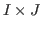
（所与）
-
...Q行列
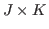
（所与）
-
...アトリビュート習得パタン行列
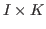
（未知母数）
項目に関連する複数のアトリビュートのうち，全てが正答のために必須。1つでも求められるアトリビュートを習得していない場合には正答確率が大きく低下する。
個人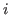
の項目 への理想反応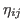
への理想反応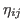
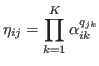
ここで，
- slip パラメタ：

- guessing パラメタ：
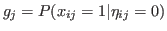
として，項目反応関数を
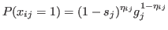
と定義する。
slip, guessing パラメータがアトリビュート 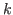
に特有のものとする（項目パラメータがない）
- slip パラメタ：
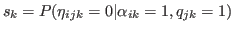
（そのアトリビュートは，必要とされていても獲得していても（適用できなければ）誤答する見込みがある）
- guessing パラメタ：
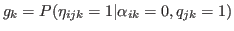
（そのアトリビュートは，必要とされていて獲得していなくても正答する見込みがある）
として，項目反応関数を
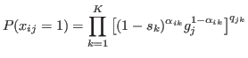
と定義する。
必要なアトリビュートを習得していないときに正答確率を低下させる罰則パラメタを持つ：
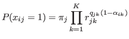
-
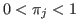
: 必要なアトリビュートを習得しているときの正答確率
-
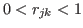
: アトリビュート
を習得していないときに正答確率を減少させる罰則パラメタ
正答のために求められるアトリビュートのうち未習得のものがあっても，ほかに習得しているアトリビュートがあれば，それに応じて正答確率が上がる。
正答に求められるアトリビュートを1つ以上習得していれば理想反応
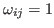
となると考える。
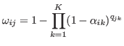
DINAモデルと同様，
- slip パラメタ：
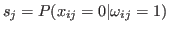
- guessing パラメタ：
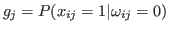
として，項目反応関数を
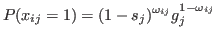
と定義する。
パラメタ
- 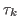
: 各アトリビュートを習得していない場合の正答確率を規定
- 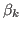
: 必要なアトリビュートを習得しているときに正答確率を変化
を用いて，
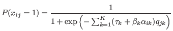
アトリビュートが個別に項目の正答確率に寄与するとする。
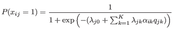
項目反応関数は
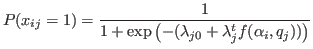
で，
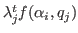
にアトリビュートの主効果だけでなく，アトリビュート間の交互作用を含む。
2値に限らない離散的な潜在特性や項目反応を統合的に扱うことが可能なモデル。
多母集団解析，LCAモデルなど不均質な集団の解析に適した方法も扱えるよう拡張されている。
パラメタ 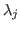
に適切な制約をおくことで，非補償・補償モデルをその下位モデルとして表現できる。
- 多肢選択式：MC-DINA, pG-DINA
- 複数の
行列を仮定：MS-DINA（多様な解答方略を表現）
- アトリビュートに対して高次の連続的潜在変数を仮定：HO-DINA, H-GDM
- 変量効果：HO-R-DINA
- 潜在移行分析を応用：LTA-CDM（
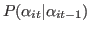
でアトリビュートパタンの変遷を表現）
理想パタンと観測パタンの解離度をハミング距離として評価（いずれも要素が2値のベクトルであるため）
ルールスペース法を発展させ，アトリビュート間の階層的な関係を取り入れる（直線型，分岐型，収束型，非構造）
MLTM-D, LSDM
有向非巡回グラフにもとづき，同時確率分布を条件付き確率に分解
潜在変数モデルやLCAモデルも表現できる
個人の問題解決仮定のモデリングや，測定における証拠中心アプローチでの中核的な役割を果たしている
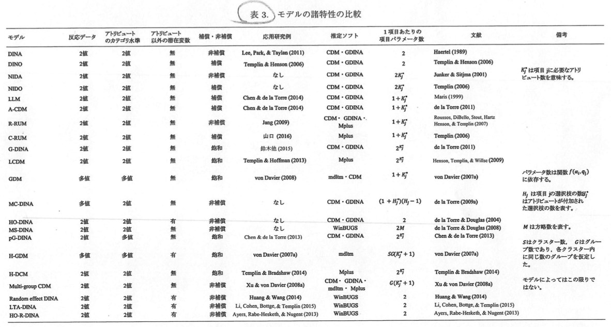
- 鈴木他 (2015) 日本テスト学会誌
- NRTを認知診断に利用，G-DINA, A-CDM, DINA, DINOを利用
- Li et al. (2016)
- ミシガン英語調査バッテリー MELAB に適用，G-DINA, A-CDM, R-RUM, DINA, DINOを情報量規準により比較
- 山口・岡田 (2017) 日本テスト学会誌
- TIMSS 2007
- Liu et al. (2014)
- 中国における英語の到達度試験
- 個人の解答プロセスの等質性
- 非補償・補償性の影響の仕方は個人によらず共通とされている（局所独立の仮定に相当）
- CDMを用いた介入の効果
- モデルを当てはめるだけで，診断情報から学習改善につなげた例が少ない
- 介入効果を測定できるモデル開発
- 反復的に運用されるテストに適したモデルの開発が必要（項目だけでなくアトリビュートの入れ替えも必要になる）
- 認知能力の比較可能性の担保
- 等化についてほとんど議論がされていない
- 外部情報を用いたCDM
- 評定者が評定したデータの解析に適したモデル，反応時間や確信度の情報を取り入れる
- アトリビュート数の決定・応用上の問題
- アトリビュート数を決めるための統計的手法の検証はあまりなされていない
行動計量学44(2)：
受動者動作特性 Receiver Operating Characteristic: ROC について，
両方の共変量を入れたモデルと推測方法を提案。
実データとして，新生児聴覚スクリーニングデータ (Pepe, 2004) 1を利用。
性別，耳の左右，TEOAE（誘発耳音響放射：聴覚障害を示唆する指標の1つ）を共変量とし，聴性脳幹反応 ABR（聴覚障害を示唆する指標の一つ）によるスクリーニングのROCを推測
性別，TEOAEとAUCの関係を見出す。
左右の耳のデータは対応のあるデータだが，対応なしとみなして分析している。
行動計量学44(2)：
Item Count 法とそれを改良した Elaborate Item Count 法を直接質問法（DQ法）と比較することで過少回答傾向を検証したもの。
回答に要する時間に注目して分析。
- IC法：複数の項目に対し，当てはまる項目の数のみ回答させる
- EIC法：複数の項目に対し，当てはまる項目の数と当てはまらない項目の数の両方を回答させる
- DC法：複数の項目に対し，それぞれ当てはまるか当てはまらないかを答えさせる
社会的望ましさの影響を受ける項目について，必ずしもDC法の結果よりIC法の結果が大きくなるとは限らない。
複数回答方式（該当する項目をいくつでも選んでもらう）では，最小限化 satisfying 2により，該当項目数が少なくなる
IC法も複数回答方式の特徴を含んでいるから，同じことが生じていると考えられる
IC法では長いリストへの回答から短いリストへの回答を引いているので，過少回答があらわれる
EICで該当と非該当を対等に注目させれば，最小限化による過少回答傾向は抑えられるのではないか
リストに含まれる項目数が多いほど，過少回答傾向は強くなると言われる。
結果としては，
- IC法の該当項目数の平均はDQ法より小さい（特に該当・非該当が不明確な項目で顕著）
- IC法の平均回答所要時間はEIC法より短い
- EIC法の平均回答所要時間はDC方より長い
教育心理学年報：https://www.jstage.jst.go.jp/article/arepj/56/0/56_291/_article/-char/ja/
潜在成長モデルの仮定
- それぞれの対象について，真の変化のパタンがある
- 真の変化のパタンは線形などのある関数によって表現できる
- 真の変化のパタンは直接観測できず，測定誤差の影響を受けて観測データが得られる
- 真の変化のパタンは複数の潜在変数によって表現され，変化の個人差はその潜在変数の大小から特徴づけられる
交差遅延モデル
- 交差遅延係数の推定の問題：時点間係数の等質性の制約や統計分布などモデルの仮定に誤りがあった場合，交差遅延液数の推定結果を大きく見誤る可能性
- 第三の変数の問題：変数に影響する共通原因がある場合に誤った因果関係の解釈をする可能性
- 検定に基づく統計的有意性のみから因果関係の有無を解釈すること自体の問題
- 個人内相関 within-person correlation ：交差遅延係数は，一方の過去の変数の値を統制してはいるものの，基本的に個人間（集団）の相関係数にすぎない
個人の特性値を考慮したモデルの提案（e.g., Hamaker, Kuiper, & Grasman, 2015）変数の統制を十分な水準まで行うことで，交差遅延係数に相当する量が個人内の関係性の大きさを実質意味する量として解釈できる
吉武 (2010) の紹介
2変数間の影響関係を適切に検討するために必要なこと：
- 双方向の影響関係の可能性を評価できる研究デザイン
- 変数が変化するのに十分な期間があること
- 3時点以上の場合には測定間隔を一定にすること
以上を構造方程式で実現するのが交差遅延効果モデル。
- 自己回帰潜在軌跡モデル autoregressive latent trajectory model
- 交差遅延効果モデルと潜在曲線モデルの合わせ技（Bollen & Curran, 2004）
- 残差を構造化した潜在曲線モデル latent curve models with structured residuals
- （Curran, Howard, Bainter, Lane, & McGineley, 2014）
教育心理学年報：https://www.jstage.jst.go.jp/article/arepj/56/0/56_63/_article/-char/ja/
尺度乱立の問題（山口2011, 石丸2011），「ニッチ尺度」の作成を目指すことの意義は？
- 長所：費用はかさむものの，短期的に大きなサンプルサイズを確保できる
- 短所：調査対象者の顔が見えない
高野 (1999) によるウェブ調査の長所・短所のまとめ
宇佐美 (2016)：測定のバイアスとサンプルのバイアスの両方が生じる
(1) 偏回帰係数の大きさの大小比較から，独立変数の影響力の大小を言うことは実際にはかなり難しい。
(2) 有意な偏回帰係数を示した独立変数にだけ影響，効果があったと結論付けるケースがある。（参考：回帰係数の一致の検定）
(3) 他の独立変数の影響を無視して当該の独立変数について論じてしまう問題。
独立変数は，可能な限り2つまでに止めておくことが望ましい（豊田, 1998）。
独立変数が3つ以上ある場合，単相関と，偏回帰係数の大小関係は必ずしも一致しない。（独立変数が2つの場合は一致する。）
独立変数同士の回帰分析から出てきた残差が独立変数になっているという意味において，重回帰分析の中には小さな重回帰分析が内包されている。
三日月の比喩（川端, 2016）
1枚の紙を半分に折り，折り目を垂直にして紙を少し開いて立てるとき，開く角度が狭すぎると倒れてしまう（石井, 2014）
人間には，付帯条件を無視する傾向がある（Gilovich1991, 守・守訳1993）。
2群事前事後テストデザイン
- 共分散分析：事後得点
事前得点（共変量）+ 群
- 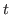
検定：「事後得点 - 事前得点」の群間差
- 2要因分散分析：群
測定時期（事前・事後）
吉田 (2006) は，前2者のみを妥当としている。（主効果には意味が無いので）
3番目の2要因分散分析で交互作用が有意になることと，2番目の
検定で有意差が得られることは等しい。
教育心理学年報：https://www.jstage.jst.go.jp/article/arepj/56/0/56_1/_article/-char/ja/
- 大規模な，政策レベルの提言を目指した科学的研究が日本の教育心理学研究には圧倒的に足りない。
- PALMA (Project for the Analysis of Learning and Achievement in Mathematics) ：ドイツ，ミュンヘン大学。3,000人を超える中高生を対象にした，数学に関する学業成績（IRTで等化），動機づけや感情に関する5年間の縦断調査データ。親や教師にも調査を実施し，データがマッチングされている。3
- ELS (Educational longitudinal study)：アメリカ。15,000人規模の親子の長期縦断データ
- 交互作用を大切にしていくのが教育実践研究だが，主効果と交互作用は矛盾しない。教育心理学者の声を教育政策というマクロレベルの意思決定に反映させるためには，主効果の視点は不可欠。
- 質問紙の後半に行くほど中間選択が増加する傾向にある
- 尺度を2つに折半して別の尺度であるかのように提示した場合，中間選択は「1パート目の最後
2パート目最初」だが，各パートでは後半に行くほど中間選択が増加
- 多次元尺度に関しては，同じ概念を反映するとされる項目がグループ化されると，ランダムに配置されたときよりも，下位尺度の内的一貫性が高くなる（Lam, et al., 2002; Melnick, 1993）
- 同じ概念に関する項目が続くと，記憶情報へのアクセスが容易になり正確な回答ができる，という説（Knowles, 1988）
- 内容的に類似した項目が続くことで，惰性的に同じ回答カテゴリばかりが選ばれる，という説（Vannette & Krosnick, 2014）
- 非回答（わからない，意見がない）の意味で中間カテゴリが選ばれる場合ことがある（Raaijmakers, et al., 2000; Sturgis, et al., 2014）
- 最小限化原理（satisficing principle; Krosnick & Fabrigar, 1997）：必ずしも最適ではないが満足できる水準の回答を選ぶことで認知的努力を最小化する，という方略の1つとして中間選択が行われる，という説
- Web調査では最小限化が促進されやすい（Heerwegh & Loosveldt, 2008）
- 特定の回答カテゴリを選ぶよう指示されている項目について，それに従わなかった回答者で中間選択が多い（増田他, 2016）
- 増田・坂上 (2014). 心理学評論, 57 472-494. （中間選択）
- 増田他 (2016). 心理学研究, 87, 354-363. （指示の非遵守と反応バイアス）
スマートフォン利用時間に関して，自己申告型調査と行動ログにどの程度乖離があり，その乖離は個人属性とどう関連し，その乖離を減らすことができるか検討したもの。
- 全体として過小申告傾向が見られた
- ライトユーザーほど過大申告しやすく，ヘビーユーザーほど過小申告しやすかった（先行研究どおり：Abeele et al., 2013; Scharkow, 2016）
- 年齢が高いほど過小申告しやすかった
- 想起助成（スマートフォンを利用している場面を想起させるような質問に答えさせる）と時間帯別聴取（1日平均をまとめて聞くのではなく，4つの時間帯に分けて回答させた）を組み合わせた場合に，もっとも行動ログとの乖離が少なかった
- 一週間を曜日，時間帯ごとのカレンダー形式に区分し，そこにできごとを書かせてゆく（Belli, 1998; Schwartz et al., 2001; Glasner et al., 2015）
- 重要なイベント以外の細かい出来事まで想起しやすくさせる
- ライフイベントの調査研究で発展してきたが，もっと短期的な出来事の調査にも用いることができる（Schwartz et al., 2001）
- Cox & Snell
- Nagelkerke
- McFadden
ベイズ的手法の利用に関して，
- モデル推定の前
- モデル推定の後，結果解釈の前
- 事前分布の影響の分析
- 結果解釈の後
にチェックすべき項目を10個提示したもの。
ウェブサイトhttp://sarahdepaoli.com/manuscript-files/より，練習用データとスクリプトなどをダウンロード可能。
1990年から2015年までに行われた心理学研究へのベイズ的手法の応用（1,579研究）についてレビューを行ったもの。
ベイズ流の論文は絶対数でも，全体に占める割合でも2000年代前半に急激に上昇していた。
対象となった分析では回帰ベースのものが約半数を占めていた。
Psychological Methods の22巻2号は，ベイズ統計学に関する特集の第一集。
この第一集では，
- ベイズ的仮説検定
- モデル比較
- 一般的ガイドライン
に関する論文を取り上げる。
なお，第二集では，
- ベイズ推定
- ベイズモデリング
を取り上げる。
このレビューでは，ベイズ的仮説検定の手法として
を紹介する。
データは，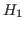
を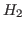
の何倍支持しているか？
事前分布は，データにもとづく（情報仮説アプローチ）か主観にもとづく（g-事前分布（の混合））か。
Kass & Raftery (1995) が入門的。
ソフトウェア JASP
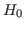
のもとでの事後分布から事後予測分布によって標本統計量を算出し，データから算出された標本統計量の事後予測分布における位置を評価。
ただし，頻度論における
値と異なり，
が真であっても，事後予測
値は一様分布にならない。
効果量とその信頼区間を報告するよう強く求められていることもあって、心理科学は改革の時にあるhttp://dx.doi.org/10.1037/met0000126。
本研究では、
- 効果量を報告する様々な方法について原理とオススメを提示
- 標準化されていない効果量の解釈と報告について強調
する。
さらに、
- 一要因分散分析
- カテゴリカルデータ分析
- 線形回帰における交互作用効果
- 単純媒介モデル
について、データをもとにオススメを例示する。
量的方法論の研究者が推奨する方法が定着しない理由について、Sharpe (2013) が見逃していること。
- 心理学の中でも諸分野によって研究法は大きく異なる
- 特定の統計改革が受け入れやすいかどうかは分野によって異なる
帰無仮説検定（NHST）を効果量 and/or 信頼区間の報告に置き換える動きについて、
- 効果の方向性のみが意味をなす
- 効果量の特定の値を予測する基盤がない（そして大きい標本を取れない）
分野でのインパクトを考える。
結論としては、統計改革論者は NHST に対する批判を一般化しすぎており、異なる研究形態に合わせた提言を行えていない。
このことが、NHST を捨て去ることへの抵抗（resistance）を生み出す要因の一部になっている。
追試の際に、先行研究からサンプルサイズ決定に必要な効果量を求めることについての問題点http://dx.doi.org/10.1080/00273171.2017.1289361。
検定力分析の結果が楽観的になり、実際の検定力は 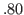
に及ばない。
シミュレーションにより、効果量の不確実性とバイアスを修正する複数の方法で、実際の検定力と意図した検定力の差異を比較。
当初研究の検定力が低い場合は特に、帰無仮説が偽で QRP (questionable research practices) がなくても、当初研究の効果量を用いると再現に失敗しがちであった。
また、効果量の不確実性とバイアスを修正した場合でも、当初研究の検定力が低い場合はあまり改善が見られなかった。
従って、
- 当初研究の検定力が十分高いこと
- 追試の検定力が意図した通りのものになるようデザインされていること
が重要であると考えられる。
不等価な比較グループにもとづく比較的回帰分断デザイン a comparative regression discontinuity design (CRD-CG) を提案http://psycnet.apa.org/doi/10.1037/met0000118。
この検定力について、
- 通常の回帰分断デザイン RD よりも高い
- カットオフや割り当て変数の分布の影響を受けにくい
- 処置ユニットが少なくて済む
National Head Start Impact のデータを用いて、RD、CRD-CG、RCT の効率性を数値的に予測。
RD よりも CRD-CG の方が予測されたパラメータに近い結果を得た。
本文はこちらhttps://link.springer.com/article/10.1007/s11336-016-9532-y
例えば、レベル1の説明変数を統制した場合にレベル2の説明変数が従属変数に及ぼす効果、などhttp://mumu.jpn.ph/forest/computer/2016/03/20/2811/http://koumurayama.com/koujapanese/mediation.pdf。本文では、個人レベル、集団レベルの説明変数の組み合わせが個人レベルの結果変数に及ぼす効果と定義。
文脈効果を検証するための
にもとづくサンプルサイズ決定の公式を提示。
- 3レベルのランダム切片モデル
- 各レベルに興味のある説明変数が1つずつある
公式に含まれる指標の値が文脈効果のSEに及ぼす影響を検証。
シミュレーションにより明らかになったこと:
- 公式に則って算出されたサンプルサイズは正負双方のバイアスを持ちうる
- バイアスは、文脈効果の信頼性、多重共線性、分散の仮定などに左右される
本文はこちらhttp://link.springer.com/article/10.1007/s11336-016-9536-7。
受験者におけるすべての熟達度を特定できていれば、
行列は完璧であるというが、多特性を多項目で計るテストでは完璧な
行列を得るのは難しい上に、どのような認知診断モデル（cognitive diagnosis model: CDM）で検証するかによって「完璧度合い」は変化しうる（完璧さは行列そのものの性質ではない）。
ある CDM のもとで、
行列が完璧か査定する方法を提示する。
本文はこちらhttp://link.springer.com/article/10.3758/s13428-016-0785-2
多重共線性は、調整関係（moderator relationship）を検討する上で厄介なものである。
本研究では、Iacobucci et al. の誤りを指摘するとともに、
- 2段階検定
- 平均センタリング
- spotlighting
- 直交化
- floodlighting
などの調整関係を検証するために用いられる手法について述べる。
多くの先行研究をレビューした上で、調整された回帰分析と結果の報告について推奨される点を提供する。
本文はこちらhttp://link.springer.com/article/10.3758/s13428-016-0702-8
正規分布しないデータについて、種々のCIの算出法の頑健性をシミュレーションによって検討。
- フィッシャーの
 変換では、95% CI は実測信頼水準が 68% 程度に落ちることもある
変換では、95% CI は実測信頼水準が 68% 程度に落ちることもある
- フィッシャーの
変換は、尖度が 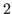
、歪度の絶対値が
あれば不正確になる
- 頑健な方法は、スピアマンの順位相関、順位に基づく逆正規変換（rank-based inverse normal: RIN）、一部のブートストラップ法のみ。
本文はこちらhttp://psycnet.apa.org/doi/10.1037/met0000139
シングルレベル、マルチレベルの回帰混合モデル regression mixture models において決定係数
を報告するための新たな枠組みを提示。
以下の観点から、11個の
指標を区別し、関連づける。
- 結果の分散は何と研究者がか考えているか
- 分散の予測に貢献するものとして研究者は何を考えているか
説明された分散を、どのようにして本質的に意味のある要因に分割するか例示
本文はこちらhttp://psycnet.apa.org/psycinfo/2017-12025-001/
レベル1とレベル2の固定効果のSEを、有限母集団に合わせて補正する方法を提案。
もし有限母集団であることを考慮しないと、SEが過大評価され、検定力の低下、CI幅の増大が生じる。
シミュレーションによると、バイアスは
- レベル2のサンプルサイズがレベル2の母集団サイズの10%を上回ると顕著
- 旧内相関とともに増加
- 集団の数とともに増加
- 平均的な集団の大きさとともに増加
する。
提案された方法では、クラスター数が30、クラスターの大きさが10あれば不偏なSEとなる。
本文はこちらhttp://link.springer.com/article/10.1007/s11336-016-9495-z
EMA を通じて、繰り返し測定される構成概念と散発的に起こるイベントとの関連を見たいとき、データは観測された時間、打ち切られた時間が相関したものから構成される。
時間事象分析 time-to-event analysis （生存時間分析）https://www.slideshare.net/okumurayasuyuki/ss-29212460を使用する必要がある。
感情状態に関する研究、うつ状態の青年における性行動に関する研究に、proportional hazards, accelerated failure time modeling を適用。
帰無仮説が棄却されない範囲を CI とする方法（hypothesis test inversion: HTI）を単一事例実験のランダマイゼーション検定に応用（randomization test inversion: RTI）。
- 完全無作為単一事例実験デザインでの平均値差（非標準化、標準化）
- 他の単一事例実験デザイン
への適用を紹介し、Rコードを提供。
本文はこちらhttp://psycnet.apa.org/doi/10.1037/met0000133
一事例実験では、処置交替デザイン alternating treatment designs (ATDs) はあまり相対的に重要視されてこなかった。
- ATDs の方法論的に望ましい特徴を先行研究とあわせてレビュー
- ATDs データの分析法のオプションを紹介
- 新たな2つの分析方法を提示
- 従来の方法と提示した方法の応用
考え方や感じ方、行動の一般的パターンを自己報告させる、というパーソナリティの測定法 global self-reports が本当に良いのかという疑問があるhttp://dx.doi.org/10.1037。
Whole Trait Theory （全体特性理論？ Fleeson & Jayawckreme, 2015）によると、自己報告の反復測定（多数状態の平均）が、特性レベルを測る上で代わりとなる、そして潜在的に優れた方法。
平均的な状態 average states が、パーソナリティの個人差を測る上で妥当なのだろうか？（global self-reports に対する増分妥当性 incremental validity の検証）
結果は、以下の通り。
- average state self-reports とインフォーマント報告との相関は、global self-reports とインフォーマント報告との相関より低い
- global self-reports を統制すると、average state self-reports はインフォーマント報告を有意に予測しない
以上より、以下のことが示唆される。
- average state self-reports は、パーソナリティの個人差について global self-reports 以上の情報を有していない
- average state self-reports は、一般に信じられているよりも多くの自己バイアスを含んでいる
日々のパーソナリティの表れや自己報告の正確さに関する研究に対する示唆
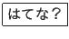
EMA のような方法でパーソナリティを把握しようとしても、決して（典型的なパーソナリティの個人差を検出する上での）妥当性は高くならないということか？
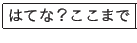
不完全なマルチレベルデータに対する多重代入法を比較。
- 代入時にマルチレベル構造を考慮しないと、級内相関係数の推定値にネガティブなバイアスをもたらす
- マルチレベル構造を表すために代入モデルに事後的にダミー変数を含めるのは問題
多変量線形混合モデルにもとづく代入が、シミュレーションで扱ったほとんどの条件下で妥当な結果をもたらす唯一の手法。
Taichi Okumura
2017-11-15